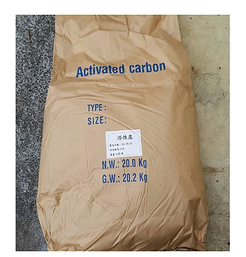
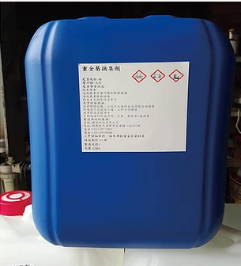
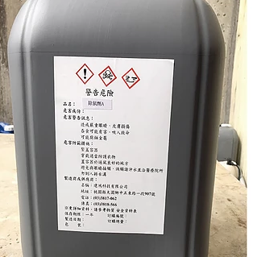
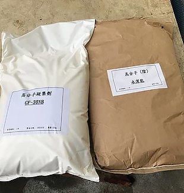
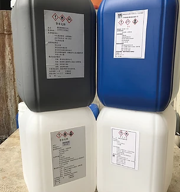

環保用藥

活性碳
工業.生活廢水脫色.脫臭及降COD.配合生物處理系統使用效果更佳.產品有粉狀.顆粒狀及柱狀三種規格

重捕硫化納
近年來由於環保意識抬高,對於危害較大的重金屬,扔然無法得到完善的去除方法.本公司開發重捕硫化鈉,是一種能提高去重金屬離子之化學藥劑.
傳統上對於廢水中重金屬離子之處理方法,不外乎是以氫氧化物調整PH值,或是投入硫化鈉在凝集.沉澱.分離,然而對於螯合物重金屬之處理,並不能令人滿意,但本公司之重捕硫化鈉能提高對於各項重金屬之去除能力

重金屬補集劑
用於除高.低濃度重金屬廢水
使用範圍廣泛,PH6~12皆可,是一種有機型聚合物
能同時操作於各種重金屬之廢水,產生顆粒之固形物
可直接處理含有螯合劑與重金屬結合之產品.例如:化學鎳.銅等產品

除氯劑
本公司研發之除氯劑A劑與B劑,可與其他水質處里劑併用或單獨使用,能有效去除水中氯離子含量.本藥劑是以化學處理方式將氯離子從水中剝離.沉澱.目前廣泛應用於含有氯離子廢水體系之產業

高分子凝集劑
高分子凝集劑可使用於化學混凝.浮除.沉降.淤泥脫水等程序中,對水有高溶解性,並形成黏稠液體

絕版清潔劑
本公司研發多款網版清潔劑.其中包含設備型,手擦型及環保型網版清潔劑.清洗能力及佳且快速.適用於油墨清洗及各類膠財清洗

營養劑
營養劑應用於廢水之生物處理系統上,提供生物所需之營養以利其生長.本公司之營養劑除了添加生物所需N(氮).P(磷),另外添加其他微量有機物及金屬元素增加生物活性